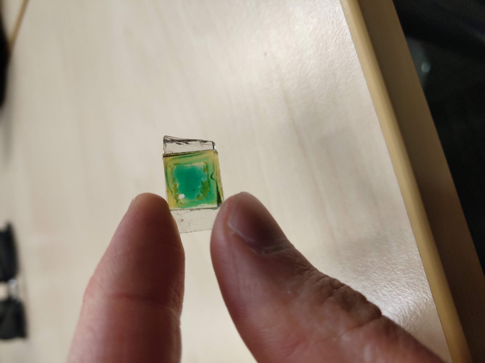

<!-- cd dssc-sensors.github.io

echo -->

<body style="background-color:powderblue;">
<h1> 
  <font size="7" face="arial" color="aqua">
  <center>  
    DSSC Sensors 
    </center>
    </h1> 

<h2> 
  <font size="5" face="arial" color="lime">
  What is a DSSC? </h2>
  
<p1> 
  <font size="2" face="comic sans" color="red">
  A Dye-sensitised solar cell(DSSC) is a type of thin film soalr cell. DSSCs work in a different way ot silicon based (p-n jubnction) solar cells.
    </p1>
